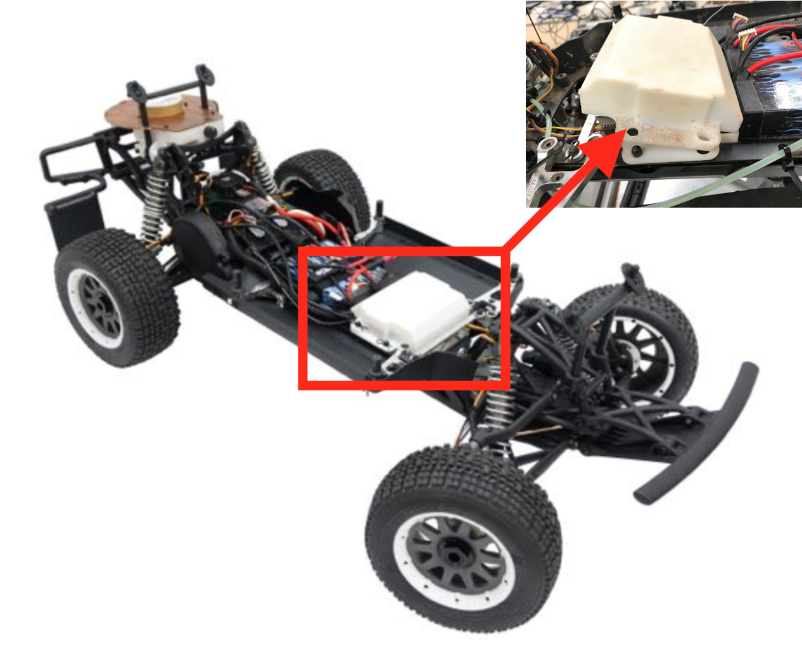

AutoRally Project
Advisors
Mechanical Section
Introduction
I was in charge of upgrading the bought car models to match the design required by uninstalling the gasoline tank section and installing a custom made battery section making the car significantly more energy efficient.
Before changes

After changes

- Using Inventor to redesign electronics box, since the increased size of battery, which made the electronics box needs to be smaller to fit into same chassis.
the position of electronics box in the whole car
Below image shows the position of electronics box and batteries
Blow image shows the assembly view of electronics box

Blow image shows the enclosed view of electronics box

- Using Inventor to redesign the GPS box with additional voltage regulator, and better mechanism to protect collision since the antenna is easily to crash the expensive GPS unit once the rally car flips.
Before changes
After changes

GPS Box Side View
GPS Box internal structure